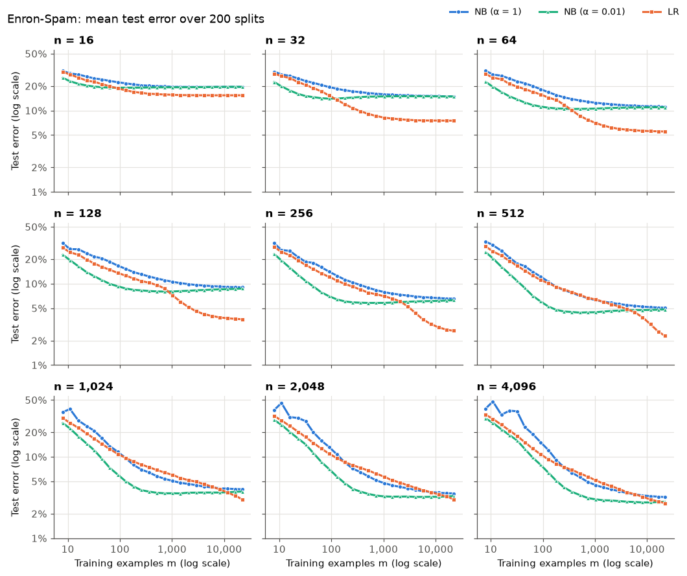
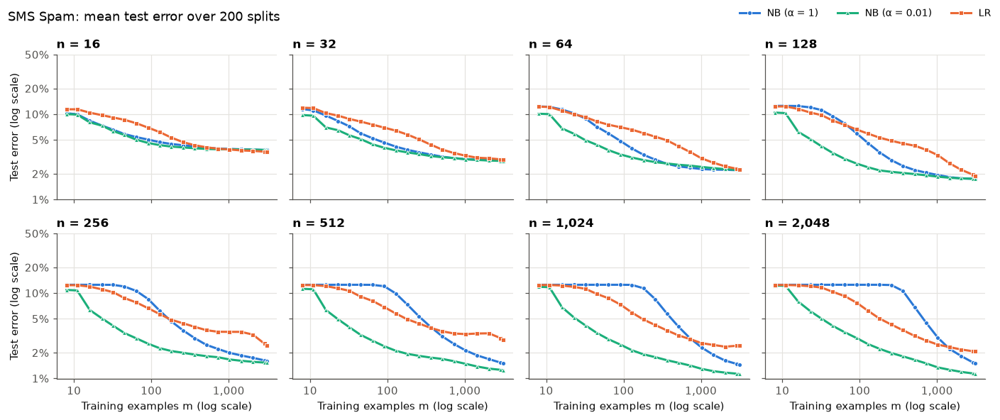

ECS 171, Group 24 (Andrew Ngo, Kevin Liu, Bryce Lee)
Two spam filters trained on the same m messages, using the n most informative words. Change m and see which one gets the message right.
Corpus: Vocabulary size n:
Training size m:
Words are ranked by mutual information (MI) with the spam label, measured on a separate 20% of the corpus. A vocabulary of size n is the first n words of this list. The weights are what each model learned at the current m.
Mean test error against training size m, one panel per vocabulary size n. NB (α = 0.01) and LR are the two models in the demo above.


The two classifiers in the demo are the fits from one of the 200 splits, exported as weights and run in the browser. Naive Bayes is Bernoulli naive Bayes with α = 0.01. Logistic regression is unregularized (C = 10,000). The random test messages were never used for training or for choosing the vocabulary.